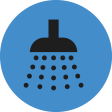

Ocean, en sus 15 años de existencia se ha situado como una empresa de referencia en el sector de las piscinas y las instalaciones acuáticas piscinas, spas y balnearios, gimnasios, centros de wellness, hoteles, colegios, empresas y Administraciones Públicas.
Actualmente presta servicio en más de 320 instalaciones acuáticas.
MANTENIMINETO DE PISCINAS
Nuestro personal está altamente cualificado en el manejo, instalación y mantenimiento de equipos de depuración y desinfección que incluye el manejo y mantenimiento de:
- Bombas
- Filtros
- Cloradores salinos
- Equipos de control automático de dosificación
- Armarios de control de válvulas motorizadas
- Equipos de desumectación y climatización
- Equipos de calentamiento de agua, etc.
SOCORRISMO
Ocean dispone de un departamento permanente de Recursos Humanos que desarrolla durante todo el año una gran labor de selección, cualificación y motivación de todo nuestro personal para desempeñar el trabajo con las máximas garantías:
- Salvamento y socorrismo
- Monitores
- Médicos, ATS, DUE…
- Personal de limpieza
- Controladores de acceso, etc.
Disponemos de centro de formación propio y homologado por la Comunidad de Madrid en nuestras instalaciones, impartiendo cursos de formación sanitaria a los distintos grupos de personal y realizando también una función de supervisión y apoyo:
- Socorrismo acuático
- Primeros auxilios
- DEA (desfibrilación)
- Soporte Vital básico y avanzado
- Reciclaje, etc.
Ocean también dispone de servicio de reparto y suministro de producto químico así como de venta, instalación y reparación de equipamiento para instalaciones acuáticas:
- Bombas
y filtros - Cloración
salina - Equipos de dosificación
y control automático - Iluminación led,
halógena - Arena de sílex,
vidrio eco-filtrante - Accesorios inox:
escaleras, duchas, etc.